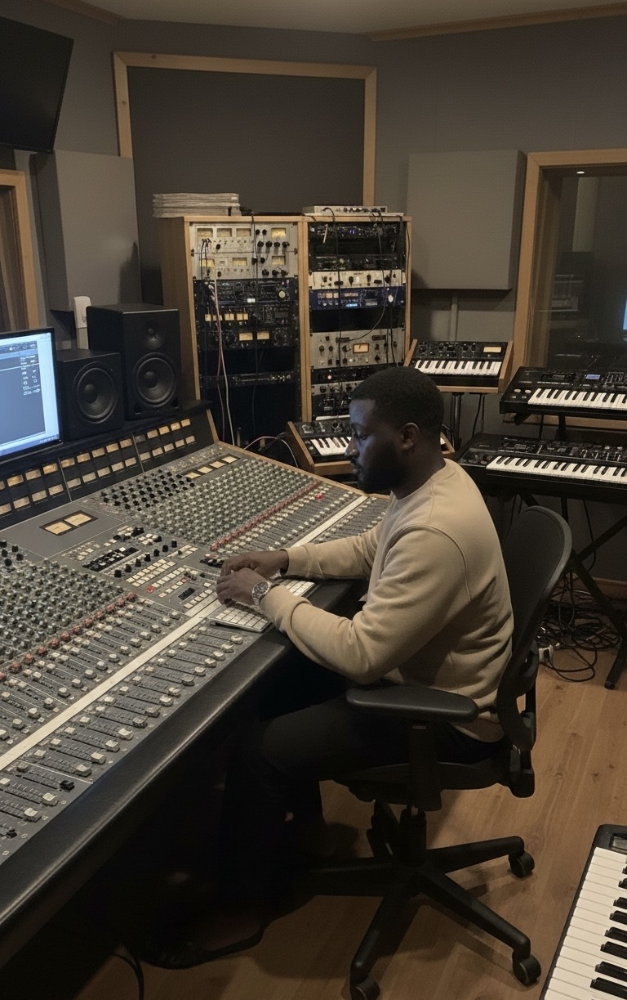

RøcAudio · The Beats By Roc Company LLC
Sound,
shaped with
intention.
Music production, mixing and mastering for artists who care about how their music feels.
Listen closer
01About
A practice built around the details
I help artists bring their ideas into focus.
YUNGRØC is a Nigerian music producer, mixing and mastering engineer, vocal producer, coach, researcher and writer. Through RøcAudio, the work spans the studio and the classroom—supporting music from its first arrangement choices through its final polish.
He is the founder of The Beats By Roc Company LLC and Symphony Producers Academy.

02Services
Thoughtful work, from start to finish
Make room for
the right sound.
03Education
Symphony Producers Academy
Learn the craft.
Trust your ear.
Explore the online Mixing & Mastering Crash Course: a focused place to build your understanding of the decisions behind a finished mix.
Ask about the course01 — Learn02 — Listen03 — RefineS·P·A
04Contact